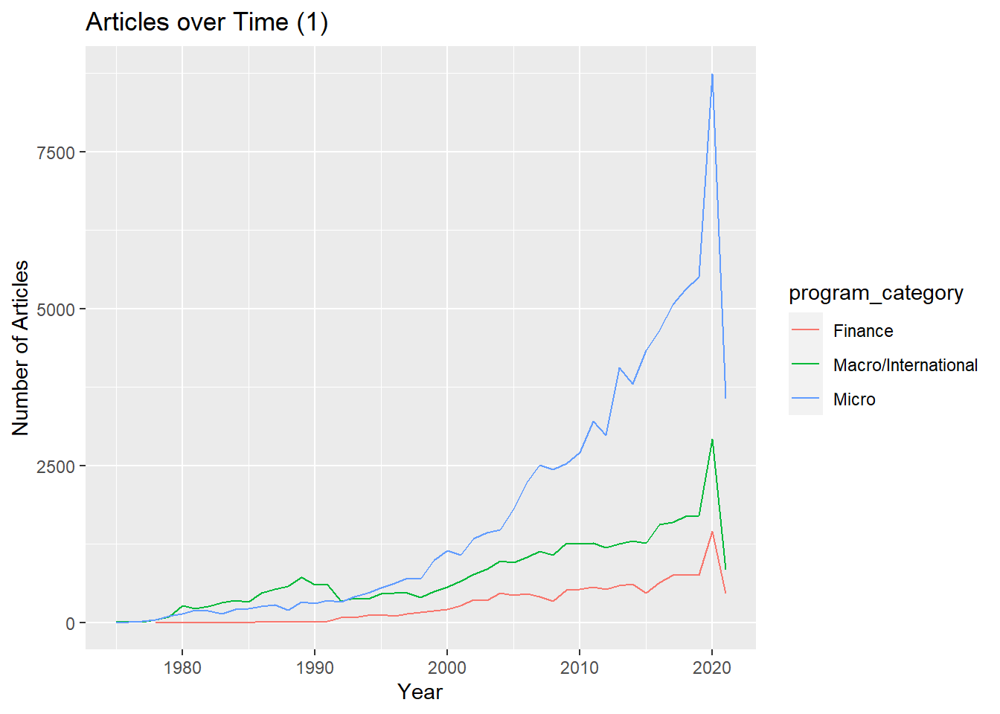
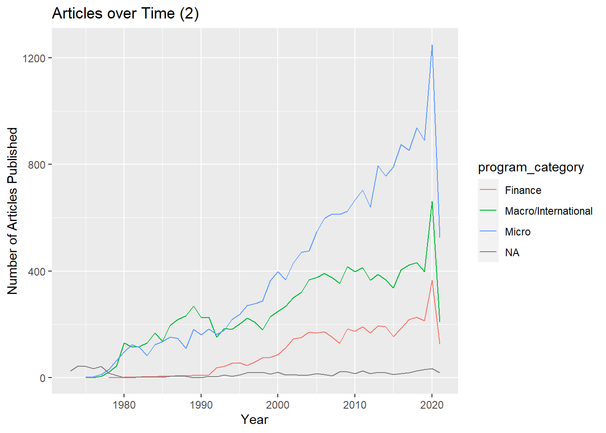
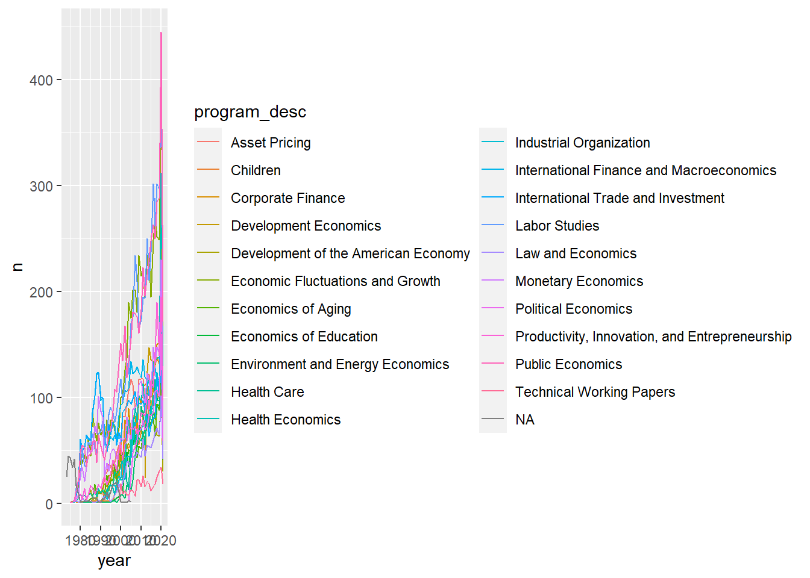

Tidy Tuesday
This will contain the future Tidy Tuesday exercise.
Load in tidytuesday R package. Load additional packages.
library(tidytuesdayR)## Warning: package 'tidytuesdayR' was built under R version 4.0.5library(tidyverse)## -- Attaching packages --------------------------------------- tidyverse 1.3.0 --## v ggplot2 3.3.3 v purrr 0.3.4
## v tibble 3.0.6 v dplyr 1.0.4
## v tidyr 1.1.2 v stringr 1.4.0
## v readr 1.4.0 v forcats 0.5.1## -- Conflicts ------------------------------------------ tidyverse_conflicts() --
## x dplyr::filter() masks stats::filter()
## x dplyr::lag() masks stats::lag()library(ggplot2)
library(here)## Warning: package 'here' was built under R version 4.0.5## here() starts at C:/Users/algla/OneDrive/Desktop/MADA/AMANDAGLATTER-MADA-portfoliolibrary(nberwp) #As used in the tt creator's cleaning instructions.## Warning: package 'nberwp' was built under R version 4.0.5library(lubridate)## Warning: package 'lubridate' was built under R version 4.0.5##
## Attaching package: 'lubridate'## The following objects are masked from 'package:base':
##
## date, intersect, setdiff, unionlibrary(tidyr)Manually load in the data.
papers <- readr::read_csv('https://raw.githubusercontent.com/rfordatascience/tidytuesday/master/data/2021/2021-09-28/papers.csv')##
## -- Column specification --------------------------------------------------------
## cols(
## paper = col_character(),
## year = col_double(),
## month = col_double(),
## title = col_character()
## )authors <- readr::read_csv('https://raw.githubusercontent.com/rfordatascience/tidytuesday/master/data/2021/2021-09-28/authors.csv')##
## -- Column specification --------------------------------------------------------
## cols(
## author = col_character(),
## name = col_character(),
## user_nber = col_character(),
## user_repec = col_character()
## )programs <- readr::read_csv('https://raw.githubusercontent.com/rfordatascience/tidytuesday/master/data/2021/2021-09-28/programs.csv')##
## -- Column specification --------------------------------------------------------
## cols(
## program = col_character(),
## program_desc = col_character(),
## program_category = col_character()
## )paper_authors <- readr::read_csv('https://raw.githubusercontent.com/rfordatascience/tidytuesday/master/data/2021/2021-09-28/paper_authors.csv')##
## -- Column specification --------------------------------------------------------
## cols(
## paper = col_character(),
## author = col_character()
## )paper_programs <- readr::read_csv('https://raw.githubusercontent.com/rfordatascience/tidytuesday/master/data/2021/2021-09-28/paper_programs.csv')##
## -- Column specification --------------------------------------------------------
## cols(
## paper = col_character(),
## program = col_character()
## )For my own reference, I am including the image of the dictionary below.

Code included in the repository to clean the data:
joined_df <- left_join(papers, paper_authors) %>%
left_join(authors) %>%
left_join(paper_programs) %>%
left_join(programs)%>%
mutate(
catalogue_group = str_sub(paper, 1, 1),
catalogue_group = case_when(
catalogue_group == "h" ~ "Historical",
catalogue_group == "t" ~ "Technical",
catalogue_group == "w" ~ "General"
),
.after = paper
) ## Joining, by = "paper"## Joining, by = "author"## Joining, by = "paper"## Joining, by = "program"joined_df## # A tibble: 130,081 x 12
## paper catalogue_group year month title author name user_nber user_repec
## <chr> <chr> <dbl> <dbl> <chr> <chr> <chr> <chr> <chr>
## 1 w0001 General 1973 6 Educ~ w0001~ Fini~ finis_we~ <NA>
## 2 w0002 General 1973 6 Hosp~ w0002~ Barr~ barry_ch~ pch425
## 3 w0003 General 1973 6 Erro~ w0003~ Swar~ swarnjit~ <NA>
## 4 w0004 General 1973 7 Huma~ w0004~ Lee ~ <NA> pli669
## 5 w0005 General 1973 7 A Li~ w0005~ Jame~ james_sm~ psm28
## 6 w0006 General 1973 7 A Re~ w0006~ Vict~ victor_z~ <NA>
## 7 w0007 General 1973 8 The ~ w0007~ Lewi~ <NA> <NA>
## 8 w0008 General 1973 9 Mult~ w0008~ Merl~ <NA> <NA>
## 9 w0008 General 1973 9 Mult~ w0008~ Robe~ robert_l~ pli259
## 10 w0009 General 1973 9 From~ w0004~ Lee ~ <NA> pli669
## # ... with 130,071 more rows, and 3 more variables: program <chr>,
## # program_desc <chr>, program_category <chr>I want to clean this a little further. I am going to use the lubridate package to create an additional column that has both the month and year.
Brainstorming:
- Join dates into one column using lubridate
- Pie chart of programs
- How did the number of papers change over time for each program?
joined_df$month_year <- as.Date(with(joined_df, paste(month, year,sep="-")), "%m-%y")
##This is not working, I'll come back to it later.First, I want to see how things have
joined_df %>% ggplot(aes(x=year, y= ))
cat_over_time <- joined_df %>% subset(select = c(year,program_category)) %>% drop_na() %>%
group_by(year) %>% count(program_category, sort = TRUE) %>% group_by(year) %>% arrange(year)
#plot over time by program category.
plot_cot1 <- cat_over_time %>% ggplot(aes(x = year, y = n, color = program_category)) +
geom_line() +
xlab("Year") +
ylab("Number of Articles") +
ggtitle("Articles over Time (1)")
plot_cot1
Looking at this graph, one of the first things I noticed was the large spike in all papers in 2020, so I went back and looked at the data (joined_df). I noticed some interesting repeat observations. For example, the paper ID w21817 (published in 2015) was listed six times with three different authors, each listed twice. I am not sure why, so I am going to look back at the descriptions. This also makes me realize that the above graph is misleading and false, and therefore if I really want to see how many papers were published each year for each category, I need to group by paper ID.
I also realized that it may not be a good idea to drop the NA category completely, because it kind of looks like there were less published articles in a given year, but in reality, we are just focusing on the category
Starting again
Here I am selecting the year, paper, and program category and filtering out any repeat observations/any repeat rows that have the same paper, year, and category.
#cot stands for category over time.
cot_id_ungrouped <- joined_df %>% subset(
select = c(paper, year, program_category)) %>%
group_by(paper) %>% distinct()
glimpse(cot_id_ungrouped)## Rows: 35,600
## Columns: 3
## Groups: paper [29,434]
## $ paper <chr> "w0001", "w0002", "w0003", "w0004", "w0005", "w000...
## $ year <dbl> 1973, 1973, 1973, 1973, 1973, 1973, 1973, 1973, 19...
## $ program_category <chr> NA, NA, NA, NA, NA, NA, NA, NA, NA, NA, NA, NA, NA...cot_id <- cot_id_ungrouped %>% group_by(year) %>% count(
program_category, sort = TRUE) %>% arrange(year)Upon looking at this data, I have now noticed that some papers have multiple categories. For example, w0317 from 1979 was both in the macro/international category and had a separate entry for the micro category, I will return to this observation, but first I want to see how the graph differs from the original.
plot_cot2 <- cot_id %>% ggplot(aes(x=year, y=n, color = program_category)) +
geom_line() +
xlab("Year") +
ylab("Number of Articles Published") +
ggtitle("Articles over Time (2)")
#Let's compare the first plot and the new plot.
plot_cot1plot_cot2
The maximum value on the y axis of the new plot is around 1/6 the original peak, so it seems like a good thing I caught the repetition of paper IDs!
New questions/thoughts:
- What about the NA ids? Should I just drop them and have an additional line for total papers?
- How can I address papers in multiple categories? (Note to self)
Another thing I am realizing is- why do we care about the category above? I don’t really care on intial observation, so I am going to reroute and try to ask a question that is more interesting but would require the same type of graph as above: focusing on the “program_desc” category is more specific and detailed.
#pot = program over time
pot_id_ungrouped <- joined_df %>% subset(
select = c(paper, year, program_desc)) %>%
group_by(paper) %>% distinct()
pot_id <- pot_id_ungrouped %>% group_by(year) %>% count(
program_desc, sort = TRUE) %>% arrange(year)
pot_plot <- pot_id %>% ggplot(aes(x=year,y=n, color = program_desc)) +
geom_line()
pot_plot
This is quite busy and therefore not super informative. How can I strike a balance between too few and too many categories? Maybe I will answer this later.
I want to ask a question that doesn’t have to do with time. I have worked a lot with